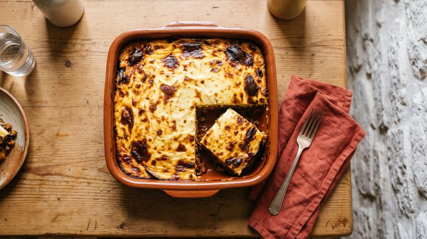
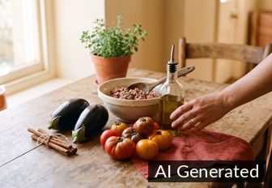
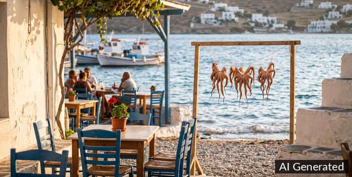

Mediterraans
Griekse moussakka



Bereiding
- Snij de aubergines in plakken van 1 cm. Bestrooi ze met zout, laat ze 30 minuten uitlekken en dep ze droog.
- Bestrijk de plakken met olijfolie en bak ze goudbruin.
- Stoof de ui en de look in olijfolie. Bak het gehakt rul. Voeg de tomaten, de kaneel en de oregano toe en laat alles 20 minuten pruttelen. Haal het kaneelstokje eruit.
- Smelt de boter, roer de bloem erdoor en voeg al roerend de melk toe tot de saus bindt. Haal de pan van het vuur en roer het ei, de helft van de kaas en de nootmuskaat erdoor.
- Leg in een ovenschaal een laag aubergine, dan het gehakt en dan weer aubergine. Giet de saus erover en strooi de rest van de kaas erop.
- Bak 45 minuten op 180 °C. Laat de moussaka 15 minuten rusten voor je aansnijdt.
Ingrediënten
- 3 aubergines
- 500g lamsgehakt
- 1 ui
- 2 teentjes look
- 400g rijpe tomaten
- 1 kaneelstokje
- 1tl oregano
- olijfolie
- zout en peper
- Voor de bechamelsaus: 50g boter, 50g bloem, 5dl melk, 1 ei, 50g geraspte kaas, snuifje nootmuskaat